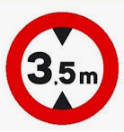

El terme gàlib designa les dimensions màximes, tant d'alçada com d'amplada, que poden tenir els vehicles i embarcacions o la secció interna dels llocs per on han de passar (túnels, ponts, etc..).
En aquest programa s'ha d'indicar el primer pont amb el qual xocarà el vehicle.
Input Format
L'entrada consta en primer lloc de l'alçada del vehicle.
A continuació ve el número de ponts que hi ha.
Per últim, venen les alçades dels ponts.
Constraints
-
Output Format
S'indicarà xoca amb el pont i, on és la posició del primer pont amb el qual xocarà el vehicle.
Si el vehicle no xoca amb cap pont, no s'ha d'imprimir res.
Sample Input 0
2.9
10
3 4 3 2 2 4 3 3 4 3
Sample Output 0
xoca amb el pont 4
Sample Input 1
2.5
5
2.4 3 3 4 3
Sample Output 1
xoca amb el pont 1
Sample Input 2
3
40
4 2 4 3 4 3 4 4 4 3 4 3 4 3 4 3 4 3 4 3 3 3 4 3 4 3 4 3 4 3 3 4 3 4 3 4 4 3 4 4
Sample Output 2
xoca amb el pont 2
Sample Input 3
1
40
4 3 4 3 4 3 4 4 4 3 4 3 4 3 4 3 4 3 4 3 3 3 4 3 4 3 4 3 4 3 3 4 3 4 3 4 4 3 4 4